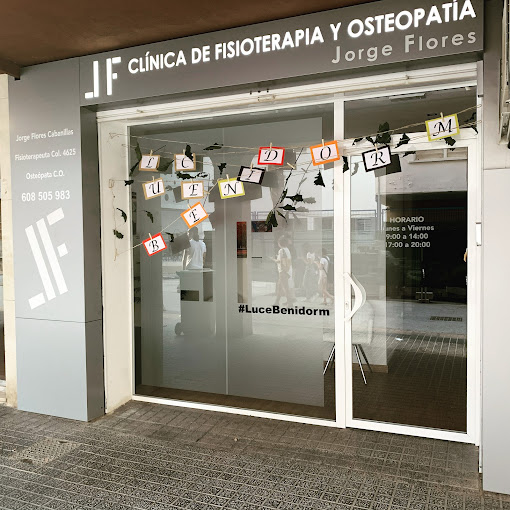
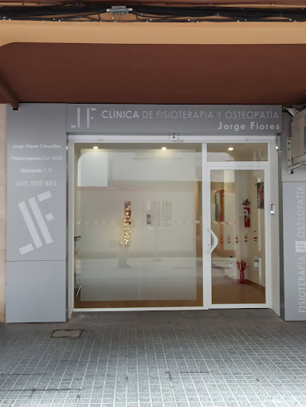

Valoración individual
Antes de cualquier tratamiento, dedicamos tiempo a entender tu historial, tu dolor y tus objetivos, para diseñar un plan de tratamiento adaptado a ti y no una rutina genérica.
Clínica de fisioterapia y osteopatía en Benidorm
Fisioterapia y Osteopatía JF, con Jorge Flores Cabanillas al frente, combina fisioterapia, osteopatía y readaptación funcional en un gabinete tranquilo, cuidado y pensado para tu recuperación, en pleno centro de Benidorm.
Sobre la clínica
Fisioterapia y Osteopatía JF está dirigida por Jorge Flores Cabanillas, fisioterapeuta colegiado (Col. 4625) y osteópata. Cada tratamiento parte de una valoración individual, con sesiones tranquilas, sin prisas y centradas en que entiendas qué te pasa y cómo vamos a solucionarlo.
Antes de cualquier tratamiento, dedicamos tiempo a entender tu historial, tu dolor y tus objetivos, para diseñar un plan de tratamiento adaptado a ti y no una rutina genérica.
Combinamos técnicas manuales, terapia manual osteopática y ejercicio terapéutico para tratar el dolor y trabajar también en la causa, no solo en el síntoma.
Un gabinete tranquilo y cuidado en pleno centro de Benidorm, con horario de mañana y tarde para adaptarnos a tu día a día.
Servicios
Estos son algunos de los tratamientos que se ofrecen en la clínica. Escríbenos por WhatsApp si tienes dudas sobre cuál se ajusta mejor a tu caso.

Valoración completa del dolor o la lesión y diseño de un plan de tratamiento personalizado.
Sesiones de seguimiento para tratar molestias puntuales, sobrecargas musculares o dolor recurrente.
Ejercicio terapéutico progresivo para volver a tu actividad diaria o deportiva tras una lesión.
Técnicas manuales osteopáticas para tratar el origen del dolor y mejorar la movilidad general.
Trabajo sobre articulaciones y tejidos para restablecer el equilibrio del cuerpo.
Tratamiento de puntos gatillo miofasciales para aliviar tensión y dolor muscular.
Vendaje funcional de apoyo tras el tratamiento, para prolongar su efecto en el día a día.



Opiniones
“Trato cercano y profesional desde la primera sesión, explica muy bien lo que hace y por qué.”
Paciente de la clínica“Notó mejoría en pocas sesiones y siempre se adapta a mi horario para las citas.”
Paciente de la clínica“Un gabinete tranquilo y limpio, con un fisioterapeuta que escucha antes de tratar.”
Paciente de la clínicaÚltimos artículos
FisioterapiaEl dolor de espalda es uno de los motivos de consulta más frecuentes. Te contamos qué señales indican que ha llegado el momento de pedir cita.
Leer artículoOsteopatíaLa osteopatía trabaja con técnicas manuales para mejorar la movilidad y aliviar el dolor. Te explicamos en qué consiste una sesión.
Leer artículoBienestarPequeños cambios en tu rutina pueden marcar una gran diferencia en cómo se siente tu espalda. Aquí tienes cinco hábitos sencillos de aplicar.
Leer artículoHorario y contacto
Lunes a viernes: 09:00 - 14:00
Lunes a viernes: 17:00 - 20:00
Sábado y domingo: Cerrado
Pide tu cita
Fisioterapia y Osteopatía JF te espera en Benidorm con un gabinete tranquilo, horario de mañana y tarde, y respuesta rápida por WhatsApp.
Pedir cita por WhatsApp